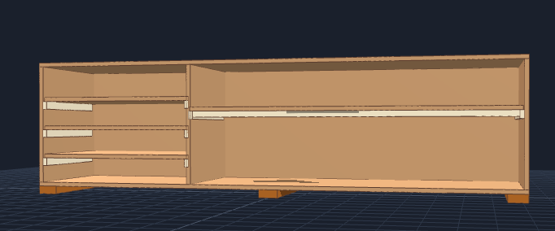

Chemistry Lab Floor Storage Shelf A
Complete Step-by-Step Assembly & Build Guide
For handover to any builder. Follow each step in order with clear part identification, glue application points, and fastener specifications.

Complete Parts List with IDs
| Part ID | Part Name | Qty | Material | Dimensions | Location & Function |
|---|---|---|---|---|---|
| P1 | Top Panel | 1 | 3/4" Plywood | 92" × 23.25" | Top exterior cap (horizontal) |
| P2 | Bottom Panel | 1 | 3/4" Plywood | 92" × 23.25" | Bottom exterior base (horizontal) |
| P3 | Back Panel | 1 | 3/4" Plywood | 92" × 24" | Full rear panel - provides rigidity & prevents wall mounting |
| P4 | Left Side Panel | 1 | 3/4" Plywood | 22.5" × 23.25" | Left outer wall (vertical) |
| P5 | Right Side Panel | 1 | 3/4" Plywood | 22.5" × 23.25" | Right outer wall (vertical) |
| P6 | Center Divider | 1 | 3/4" Plywood | 22.5" × 23.25" | Main vertical divider (separates left & right sections) |
| P7 | Long Shelf | 1 | 3/4" Plywood | 60.25" × 23.25" | Single horizontal shelf for right section |
| P8 | Small Shelves | 3 | 3/4" Plywood | 29.5" × 23.25" (each) | Three horizontal shelves for left section |
| P9 | Shelf Stiffener Lip | 1 | 1×2 Pine Board | 60.25" × 1.5" | Reinforcement under front edge of long shelf (P7) |
| P10 | Shelf Cleats | 8 | 1×2 Pine Board | 20" × 1.5" (each) | Support ledges mounted on inside of side/divider walls |
| P11 | Base Skids (Feet) | 3 | 2×4 Lumber | 23.25" × 3.5" (each) | Floor elevation - mounted under bottom panel (P2) for moisture protection |
Materials to Buy
Lumber & Plywood
| Qty | Item | Use (Parts) |
|---|---|---|
| 3 Sheets | 3/4" × 4' × 8' Sanded Plywood (BCX or Sandeply Birch) | P1, P2, P3, P4, P5, P6, P7, P8 |
| 2 Boards | 1" × 2" × 8' Select Pine Board | P9 (Stiffener), P10 (Cleats) |
| 1 Board | 2" × 4" × 8' Construction Pine Board | P11 (Base Skids) |
Fasteners & Glue
| Qty | Item | Specification & Use |
|---|---|---|
| 1 Bottle | Titebond II Wood Glue | 16 oz - Primary bonding for ALL wood-to-wood joints (80%+ strength) |
| 1 Box | 2" #8 Star-Drive Wood Screws | Main fasteners: P11 to P2, P1 to vertical panels, P2 to vertical panels |
| 1 Pack | 1.25" - 1.5" Finish Nails (or 1.25" Wood Screws) | Vertical fastening: P10 cleats to walls, P9 to P7, shelves to cleats (3 per cleat) |
| 1 Pack | 1.5" - 2" Finish Nails (or 1.625" Trim Screws) | Horizontal fastening: P4, P5, P6 through to shelf edges (2-3 per shelf) |
| 1 Pack | 1" - 1.25" Brad Nails (or 1" Wood Screws) | P3 (back panel) mounting around perimeter & center divider (every 6-8") |
| 1 Bit | 1/8" Countersink Drill Bit | Pre-drilling pilot holes & recessing screw heads flush |
Finishing Materials
| Qty | Item | Purpose |
|---|---|---|
| 1 Quart | Latex Wood Primer | Seals plywood edges & surfaces (Mandatory) |
| 1 Gallon | Semi-Gloss or Gloss Interior Enamel Paint | Chemical-resistant body finish (Mandatory) |
| 1 Quart | Water-Based Polyurethane (Clear) | Protective top coat for shelves (Optional) |
| 1 Pack | 120-Grit Sandpaper + Foam Rollers & Brushes | Sanding & paint application (Mandatory) |
Master Cut List
Plywood Sheet Cutting Plan (3 sheets needed)
Assembly Diagrams
Diagram A: Long Shelf Stiffener Lip (End Cross-Section)
The stiffener [P9] is mounted vertically under the front edge of the long shelf [P7] to prevent sagging.

Diagram B: Support Cleat Placement (Interior Wall View)
Cleats [P10] are mounted on the inside faces of vertical panels to support shelves. Different heights for left vs right sections.
- Drive 1.25" finish nails or screws through P10 into the vertical panel (P4, P5, or P6)
- Use 3 fasteners per cleat (left end, center, right end)
- Nails should be driven HORIZONTALLY through the cleat into the wall
Diagram C: Cabinet Assembly - Front Exploded View
Shows how all parts fit together in the final assembly.
Step-by-Step Assembly Instructions
Instructions:
- Lay the P7 (Long Shelf) flat on your workbench with the BOTTOM side facing UP.
- Position P9 (the 1×2 board) along the underside of P7, with the front edge of P9 flush against the front edge of P7 (creating an inverted "L" beam).
- Apply wood glue along the ENTIRE contact joint (bottom of P7 where it meets top of P9).
- Clamp firmly in place to hold alignment.
- Pre-drill pilot holes with 1/8" countersink bit through TOP surface of P7 (the visible side after assembly)
- Space holes every 6-8 inches along the 60.25" length (approximately 8-9 nails)
- Drive 1.25"-1.5" finish nails or wood screws VERTICALLY DOWN through P7 into P9
- Ensure nails are driven fully flush (countersink screws 1/16" below surface)
Wait 30 minutes before moving assembly.
Instructions:
- Lay P2 (Bottom Panel) flat on the floor with the BOTTOM side facing DOWN (the side that will be against the floor).
- Position the three P11 skids on top (the visible surface):
- Left Skid: Flush with the far left edge (running front-to-back)
- Center Skid: Positioned exactly in the middle (at 46" from left edge)
- Right Skid: Flush with the far right edge (running front-to-back)
- Ensure all skids are parallel and perpendicular to the front edge of P2.
- Use 2" #8 wood screws (4 screws per skid = 12 total)
- Pre-drill pilot holes with 1/8" countersink bit through P2 into each skid
- Screw placement: 2 screws at front end of each skid, 2 at rear end
- Drive screws VERTICALLY DOWN through P2 into P11
- Ensure screw heads are countersunk flush or slightly recessed
The skids will elevate P2 approximately 1.5" off the floor, protecting against moisture and chemical spills.
Instructions - LEFT SECTION (P4 & left face of P6):
- Stand panels P4 and P6 vertically and facing each other.
- On the INSIDE FACE of each panel, draw horizontal guidelines at:
- 5.5" from the bottom edge
- 11.0" from the bottom edge
- 16.5" from the bottom edge
- Position each 20" P10 cleat just BELOW the marked line, with the cleat's top surface touching or just below the line.
- The cleat should be flush against the REAR edge of the panel, leaving a 3.25" gap at the FRONT.
Instructions - RIGHT SECTION (P6 right face & P5):
- Stand panels P6 and P5 vertically and facing each other.
- On the INSIDE FACE of P5 (and right face of P6), draw ONE horizontal guideline at:
- 14.5" from the bottom edge
- Position the single P10 cleat just BELOW this line.
- Flush against the REAR edge, leaving 3.25" gap at FRONT.
- Use 1.25" finish nails or 1.25" wood screws (3 per cleat)
- Pre-drill pilot holes with 1/8" bit
- Drive nails/screws HORIZONTALLY through the cleat into the panel
- Placement: Left end, center (10"), and right end of each cleat
- Ensure cleat is level and flush against panel
Instructions:
- Carefully slide each shelf horizontally into position, resting on top of the mounting cleats.
- Left Section: Position the three P8 small shelves at the three cleat heights (5.5", 11.0", 16.5" from bottom).
- Right Section: Position the P7 long shelf at 14.5" from bottom.
- Verify that:
- All shelves are level (use a level tool)
- Shelves are fully supported along their entire length
- No gaps between shelf and cleat
- Use 1.25"-1.5" finish nails or wood screws
- Pre-drill pilot holes with 1/8" countersink bit through TOP surface of shelf
- Drive nails/screws VERTICALLY DOWN through the shelf into each cleat below
- Use 3 fasteners per cleat (left end, center, right end)
- Countersink screw heads 1/16" below surface
- Use 1.5"-2" finish nails or 1.625" trim screws
- Pre-drill pilot holes with 1/8" bit
- Drive nails/screws HORIZONTALLY through the side panels (P4, P5) or divider (P6) into the shelf edge
- Use 2-3 fasteners per shelf side (at shelf ends and center)
- Aim for center of plywood edge to avoid splitting
Instructions - Attach Top Panel [P1]:
- Apply Titebond II to the TOP edges of all three vertical panels (P4, P5, P6).
- Carefully place P1 (Top Panel) squarely on top of the frame, ensuring:
- Front edges are aligned and flush
- Panel is level (use a level tool)
- Overhang is equal on all sides
- Pre-drill pilot holes with 1/8" countersink bit through P1 into each vertical panel (3 holes per panel).
- Drive 2" #8 wood screws vertically down through P1 into the top edge of each panel.
Instructions - Attach Bottom Panel [P2]:
- Apply Titebond II to the BOTTOM edges of all three vertical panels (P4, P5, P6).
- Carefully set the frame (now with P1 attached) down onto P2 (which already has P11 skids attached).
- Verify:
- Frame is centered on P2
- Skids are properly positioned
- All edges are aligned
- Pre-drill pilot holes with 1/8" countersink bit from INSIDE the cabinet, through each vertical panel edge into P2.
- Drive 2" #8 wood screws through panel edges into P2 (3 screws per panel).
Instructions:
- Lay the ENTIRE cabinet assembly face-down on a flat, level surface (or carefully on sawhorses).
- Check diagonal measurements from corner to corner:
- Measure from top-left corner to bottom-right corner
- Measure from top-right corner to bottom-left corner
- Both measurements should be exactly equal (within 1/4")
- If not equal, loosen fasteners and adjust until perfectly square
- Apply Titebond II around the ENTIRE rear perimeter and center divider edge (where P3 will attach).
- Carefully position P3 (Back Panel) flush over the rear face of the cabinet.
- Ensure P3 is flush with all edges and perfectly aligned with the frame.
- Use 1"-1.25" brad nails or wood screws
- Pre-drill pilot holes with 1/8" bit around the perimeter
- Drive fasteners every 6-8 inches around the entire perimeter of P3
- Also drive fasteners along the center divider (P6) on the back side
- Use approximately 20-24 fasteners total
- Ensure all fasteners are driven flush (nails) or countersunk (screws)
Allow glue to cure for 2 hours before moving or flipping the cabinet.
Instructions:
- Sand all outer corners and exposed edges with 120-grit sandpaper until completely smooth (no splinters).
- Pay special attention to:
- All plywood edges (P1-P8)
- Top surfaces of shelves (P7, P8)
- All four outer corners of the cabinet
- Any visible screw/nail holes
- Wipe away all wood dust with a damp rag. Let dry completely (15-30 minutes).

Finishing & Lab Chemical-Proof Painting
Instructions:
- Apply 1 coat of Latex Interior Wood Primer to all surfaces (exterior, interior tops of shelves, all edges).
- Use foam roller or brush for smooth, even application.
- Allow 2 hours drying time before proceeding.
- Primer seals the plywood and provides base for enamel paint adhesion.
Instructions:
- Apply 2 coats of Semi-Gloss or Gloss Interior Enamel Paint to all exterior surfaces.
- Allow full drying time between coats (check paint can for specific time - typically 4-6 hours).
- Use foam roller or brush for smooth, professional finish.
- Paint finish resists water, chemical splashes, and cleaning agents used in chemistry labs.
Instructions:
- For maximum protection on shelf tops, apply 1-2 coats of Clear Water-Based Polyurethane.
- Focus on:
- All shelf top surfaces (P7, P8)
- Top panel (P1) working surface
- This provides extra scratch and stain resistance for a chemistry lab environment.
- Allow full cure time per manufacturer instructions before loading shelves.
Final Assembly Notes & Safety
Installation Location
- Assemble this shelf unit inside or immediately adjacent to the chemistry lab room where it will permanently stay.
- Place on a level, flat floor.
- DO NOT WALL MOUNT - This shelf is engineered to be completely free-standing.
- The internal cleats, back panel, and base skids provide all structural rigidity needed.
- Ensure floor is clean and level before final placement.
Before Loading Supplies
- Allow all finishes to fully cure (24-48 hours) before placing any items on shelves.
- Verify all fasteners are tight and secure.
- Distribute load evenly across shelves - do not overload single areas.
- Keep heavier items on lower shelves.
Maintenance
- Clean shelves regularly with damp cloth and mild soap (suitable for lab environments).
- Dry immediately to prevent water damage.
- Check fasteners periodically and tighten if needed.
- Do not drag or slide on floor - always lift when moving.
Reference Images
The following images are available in the project folder for visual reference during assembly:
Available Reference Images
- floor_shelfa.png - Full 3D view of completed shelf
- front_view.png - Front elevation view showing dimensions
- stiffer_bar_clears_base_skids.png - Detail showing P9 stiffener and P11 skids
- OnfloorShelf.jpg - Photo of shelf installed on floor
- TableTopShelf.jpg - Photo of tabletop version (reference only)
Print out reference images and post near work area during assembly. Mark up with part IDs as you complete each step.